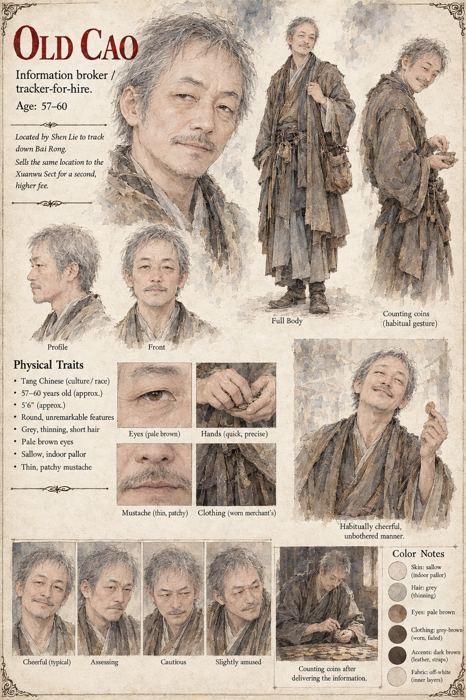

Old Cao
Information broker and tracker-for-hire · 57–60 by his sheet
Finds people who do not wish to be found, for clients who mostly do not wish to be seen finding them, from the back room of a wine shop in the county seat, and has done so, by his own cheerful estimate, for longer than most of his clients have been alive. He names his price before Shen Lie has finished describing the shepherd and names it again, higher, when Shen Lie mentions the words Hollow Pine. He says he has found six hundred and eleven people in this trade and, so far as he knows, seen perhaps forty of them buried within the year, and that he does not ask what happens after his part is finished, which is in his professional opinion the only part of the arrangement worth keeping clean.
Three days later he sends word: found. What Shen Lie does not know is that Old Cao has also sold the same location to the Xuanwu Sect for a second and considerably higher fee, which is how two parties come to the same hollow, and the Custodian can only call his professional consistency admirable. The sheet draws him pale from indoor work, thin-mustached, with grey thinning hair and quick, precise hands, habitually cheerful and unbothered, counting coins after delivering the information; its age and build are its own.
“I do not ask what happens after my part is finished.”